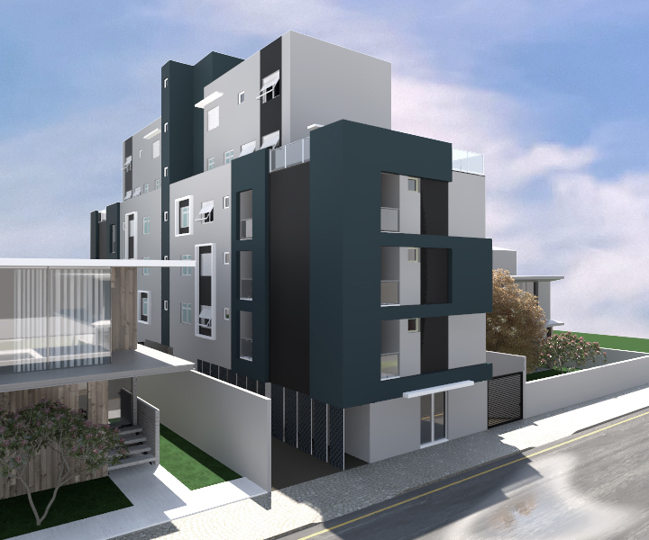
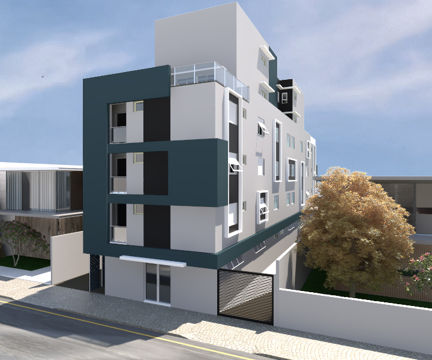
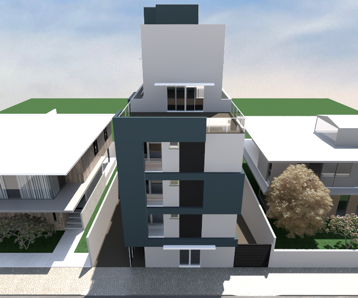
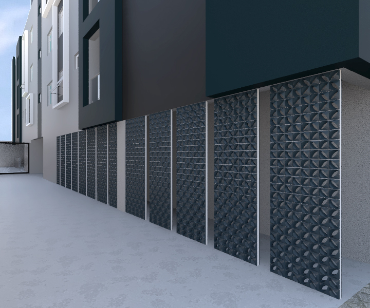

Composição Projetual III
Descrição do Projeto
Para esta disciplina foi desenvolvido o projeto de um residencial multifamiliar contendo uma área comercial no pavimento térreo, três pavimentos tipo com 2 apartamentos de 2 dormitórios e 2 apartamentos de 1 dormitório cada, todos com sacada, e um último pavimento com 2 apartamentos duplex.
O projeto conta com telhado verde, platibandas para esconder o telhado e marquises e molduras nas janelas que servem como proteção da chuva e da incidência de luz do sol e contribuem para a estética das fachadas laterais. No acesso pessoal prédio no térreo existe uma divisão do acesso de veículos para o estacionamento da área comercial por meio de cobogós com a mesma cor da moldura da fachada frontal.
O projeto foi modelado no software SketchUp e renderizado com o VRay para SketchUp 2.0.
   Voltar ao portfólio